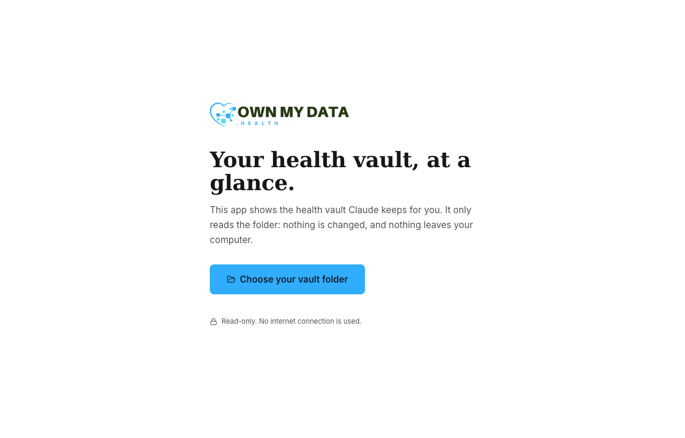
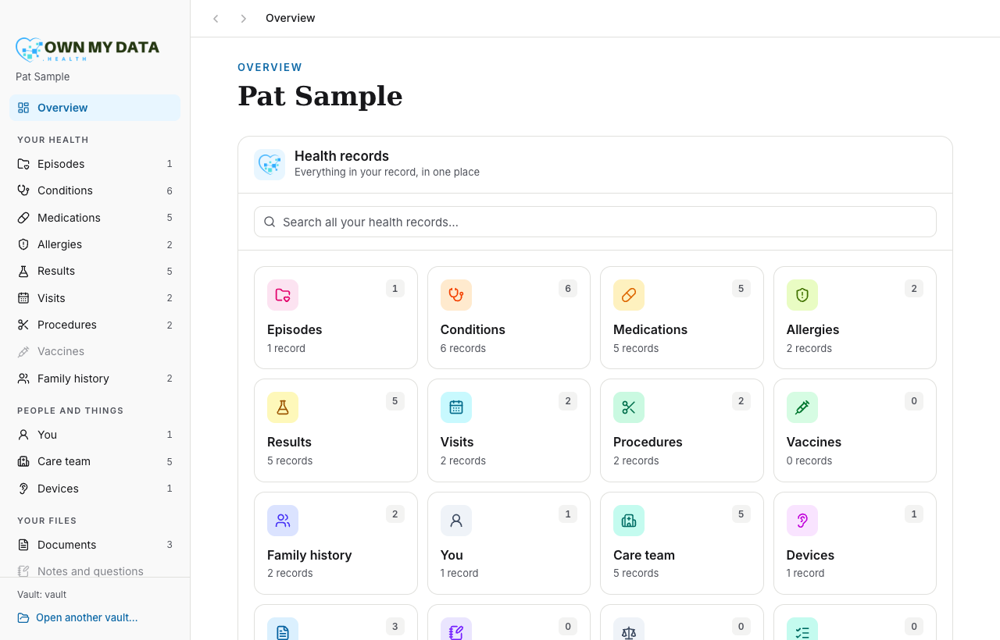
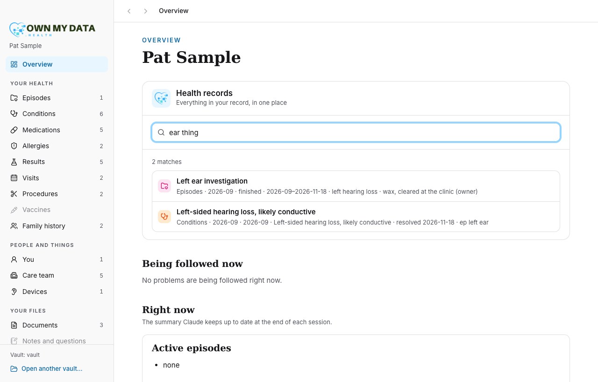
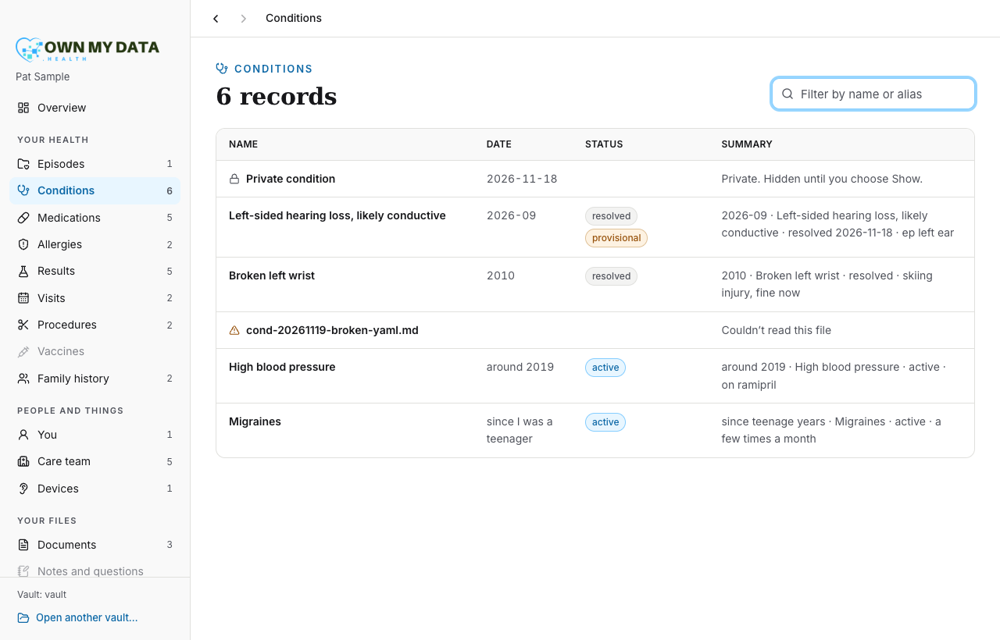
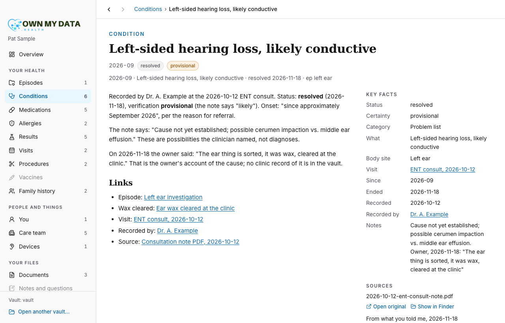
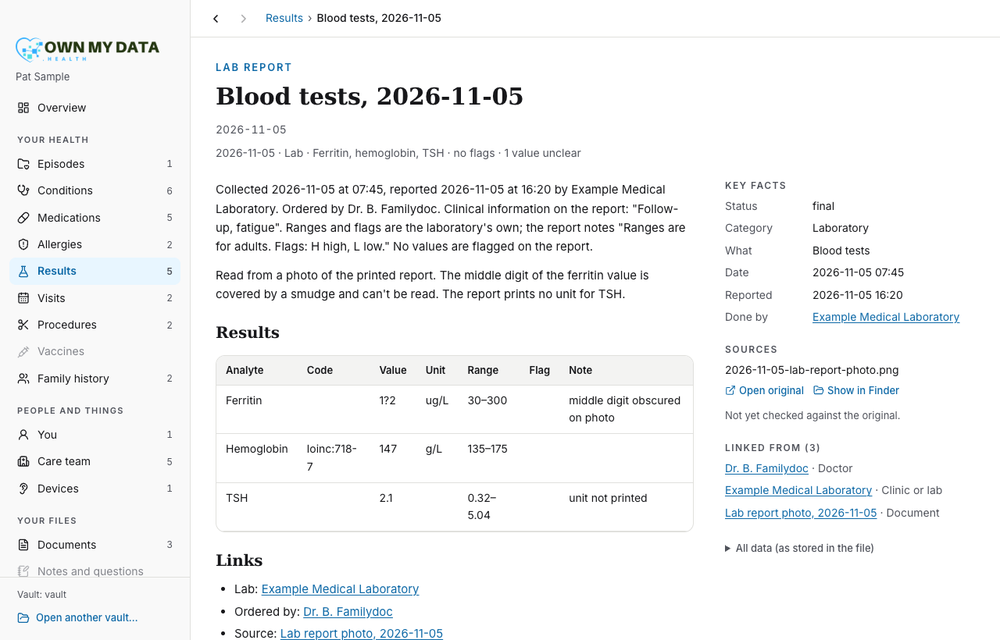
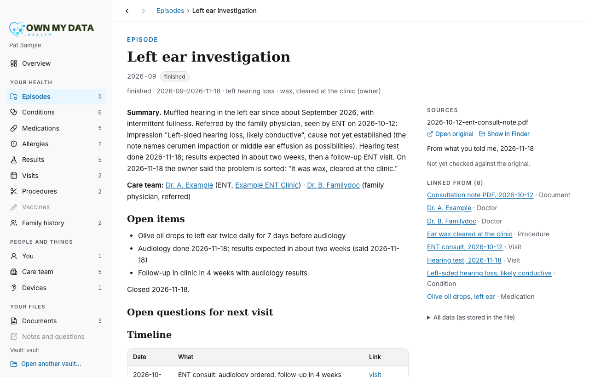
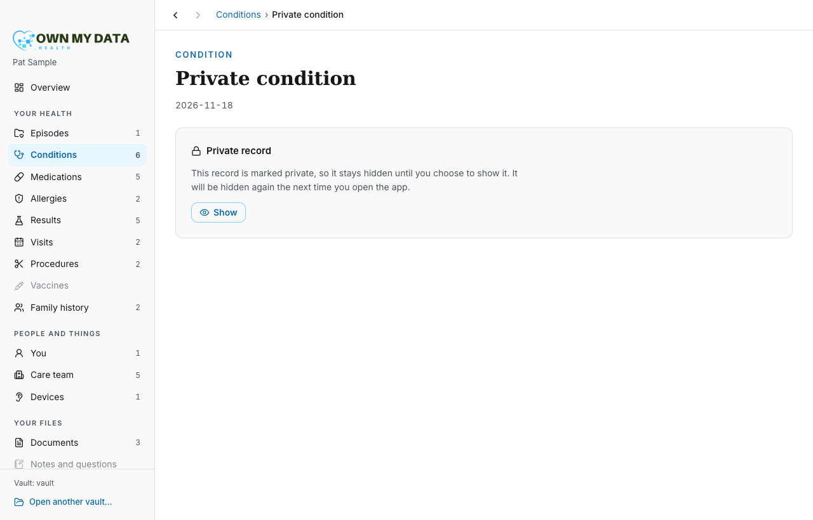

Viewer guide · v0.2 · macOS
See your whole record, offline.
The ownmydata viewer is a Mac app for browsing the vault Claude keeps for you: your problems, results, medicines and visits, with the links between them working like a website. It only reads the folder. It never changes a file and never goes online.
What it is
The plugin writes your vault; the viewer lets you look at it. Use it to see everything at a glance, follow a problem from first visit to conclusion, check a value against its original document, or show a clinician your history on your own screen.
Never edits
No code in the app can write to your vault. Corrections go through Claude, which keeps the change logs straight.
Never goes online
No accounts, analytics, update checks or remote fonts. Every network request is blocked, twice.
Hides what's sensitive
Records marked private stay hidden until you click Show, and hide again every time the app opens.
Install
- From the latest release, download the DMG for your Mac:
ownmydata-<version>-arm64.dmgfor Apple Silicon (M1 and later)ownmydata-<version>-x64.dmgfor Intel Macs
- Open the DMG and drag ownmydata into Applications.
- The app isn't signed by Apple yet, so the first time: right-click it in Applications, choose Open, then Open again. After that it opens normally.
Windows and Linux versions aren't packaged yet.
Open your vault

Click Choose your vault folder and pick the folder you chose when you set up ownmydata: the one with a file called memory.md in it. The app checks it really is a health vault, remembers it, and opens the Overview. Next time, it opens straight there.
To switch to a different vault: File → Open Another Vault… (⌘ O), or the link at the bottom of the sidebar.
The Overview

- Health records: one card per section, with its count. Click a card to open the section.
- Search all your health records: type a word and the cards become a list of matching records from every section. It matches names, the nicknames you use ("ear thing") and summaries.
- Being followed now: the problems still open, with their status.
- Right now: the summary Claude keeps up to date at the end of each session: active problems, what's coming up, recent flagged results and medicines. Every line links to its record.

Sections
The sidebar groups your records the way you'd think about them. Sections with nothing in them yet are shown dimmed, so you can see what the vault can hold.
| Section | What's in it |
|---|---|
| Episodes | One page per problem being followed ("Left ear investigation"), with a timeline and, once it's over, a conclusion. |
| Conditions | Problems and diagnoses, current and past. |
| Medications | What you take, took or were prescribed. |
| Allergies | Allergies and intolerances, with reactions. |
| Results | Lab reports, hearing tests, imaging reports, single measurements, and lifestyle answers from your history. |
| Visits | Appointments, calls and hospital stays. |
| Procedures | Operations, biopsies, therapies. |
| Vaccines | Immunisations. |
| Family history | Conditions in your family, by relative. |
| You | Your own details. |
| Care team | Your doctors, clinics and labs. |
| Devices | Hearing aids, implants and similar. |
| Documents | One record per original document, with a button to open the original. |
| Notes and questions | Questions for your doctors and notes you asked Claude to keep. |
| Decisions, Plans | Health decisions with their reasons, and care plans. |
| All files | Every file in the vault as folders, including indexes, change logs and the rules Claude follows. |
If a record doesn't fit any section, an Other section appears with the reason.
Lists and filters

- Records are listed newest first. Dates given in words ("since I was a teenager") come after dated ones.
- The filter box narrows the list as you type, matching names, nicknames and summaries.
- Status chips show where things stand (see what the words mean).
- Click a row, or move to it with Tab and press Return, to open the record.
Record pages

Every record page has the same parts:
- Header: what kind of record it is, its title, its main date, its status and a one-line summary.
- The text: Claude's short, readable write-up. Underlined links open the linked record inside the app. Links with a dotted underline point to something that isn't in the vault.
- Key facts: the structured data in plain labels: body site, since, recorded by, the visit it came from. Doctors, clinics and visits are links.
- Sources: where it came from. A document has Open original (opens it in Preview or your usual app) and Show in Finder. Something you told Claude shows as "From what you told me" with the date.
- Linked from: every record that points here. On an episode, that's everything that belongs to the problem.
- All data: click to see exactly what's stored in the file, field by field.


Private records

Records about mental health, reproductive and sexual health, substance use and genetic results are marked private by the plugin. The viewer treats them carefully:
- In lists and search they appear only as "Private condition" (or medication, and so on) with a lock. Their real name, nicknames and summary are never shown.
- Searching for words inside them finds nothing, so a search can't reveal what a private record is about.
- Click Show to see the record. It stays visible until you quit the app, and is hidden again every time the app opens.
Until you click Show, the private details don't even reach the window: the part of the app that reads files holds them back.
Getting around
The app keeps a history like a browser. Back returns you to the exact place you were, including how far you'd scrolled and what you'd typed in a filter.
| Do this | With |
|---|---|
| Go back | ⌘ [, the ‹ button, the mouse back button, or a two-finger swipe |
| Go forward | ⌘ ], the › button, or the mouse forward button |
| Overview | ⌘ ⇧ H, or Overview in the sidebar |
| Open another vault | ⌘ O |
| Bigger or smaller text | ⌘ + and ⌘ −; ⌘ 0 to reset |
| Up a level | Click the section name in the bar at the top |
Live updates
Keep the viewer open while you work with Claude. When Claude files a document or makes a correction, the lists, counts and the page you're on update within a second or two, without losing your place.
What the words mean
| You see | It means |
|---|---|
| active | A problem or allergy that's current. |
| resolved, inactive | Over, or no longer causing trouble. |
| provisional | The clinician wrote it as likely, not certain ("likely conductive"). |
| differential | One of several possibilities the clinician was considering. |
| taking, planned, stopped, finished | For medicines: what you take now, what was prescribed but not started, and what's ended. |
| finished, on hold | For episodes: closed with a conclusion, or paused. |
| preliminary | The report says its results aren't final yet. |
| From what you told me | The record comes from something you said, not a document. It's your account, not a diagnosis. |
| Not yet checked against the original | Nobody has confirmed the values against the document yet. Tell Claude "numbers look right" once you have. |
| Couldn't read this file | The file is damaged or was edited by hand. The reason is shown; saying "check my vault" to Claude usually fixes it. |
| A dotted underline | A link to something that isn't in the vault. |
Privacy
- No network. The app makes no connections. A content security policy and a block in the app's own networking both stop any request, so even a bug couldn't send your data anywhere.
- No writing. The app never changes, moves or deletes a file in your vault. Its only saved setting, which folder you chose and the window size, lives in the app's own settings folder.
- Stays in your vault. The app refuses to open anything outside the vault folder, including through shortcuts that point elsewhere.
- External links in a record open in your web browser, and only when you click them.
Anyone who can see your screen can see what you open. Close the app, or switch away, when you're not using it.
Troubleshooting
"ownmydata can't be opened because Apple cannot check it"
The app isn't signed yet. Right-click it in Applications, choose Open, then Open again. You only need to do this once.
"That folder doesn't have a health vault in it"
Pick the folder that contains memory.md, not a folder inside it (like memory) or the one above it. If you haven't made a vault yet, see Create your vault.
"The vault folder you used last time can't be found"
The folder was moved, renamed or is on a drive that isn't connected. Choose it again in its new place.
"Made by a newer version of ownmydata"
Your vault uses a format this version of the viewer doesn't know yet. Install the latest viewer from the releases page.
A record I just added isn't showing
Give it a second or two; the app picks up changes on its own. If it still isn't there, check that Claude saved it into this vault (the folder name is shown at the bottom of the sidebar).
A file shows "Couldn't read this file"
Usually a hand edit broke its structure. Ask Claude to "check my vault"; the health check reports what's wrong and fixes what it safely can.
Something else
Open an issue on GitHub with what you did and what you saw, using fictional details or a screenshot of the sample vault, never your own records.